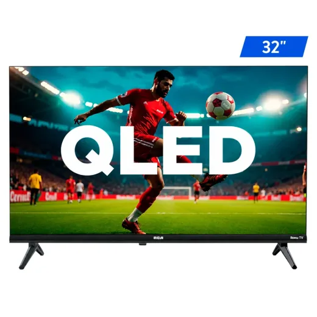
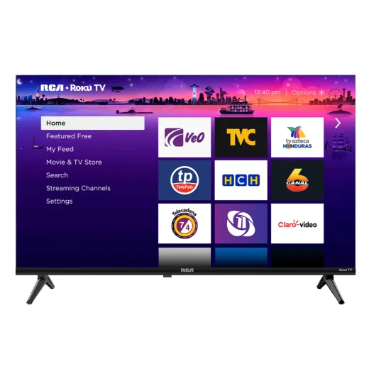
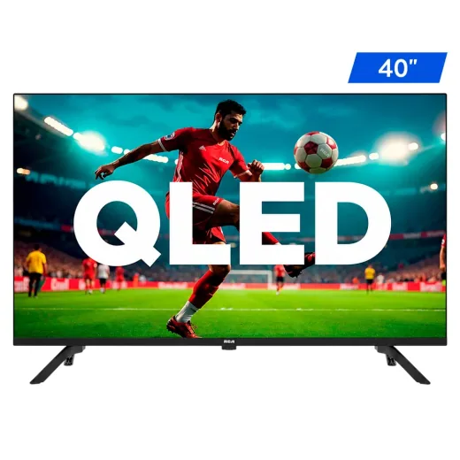
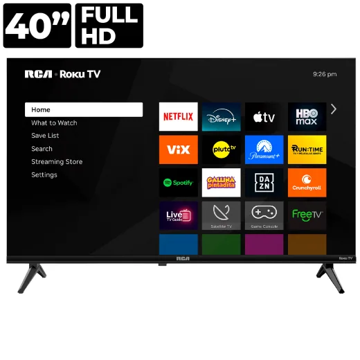

RCA · Modelo RC32QL
Televisor RCA 32" QLED Smart · RC32QL
L 3,415.5
En Walmart
Precio en cada tienda
| Tienda | Precio | Antes | Disponibilidad | |
|---|---|---|---|---|
| Walmart | L 3,415.5 | Disponible | Ver en tienda › |
Precios referenciales tomados de cada tienda el 21 de noviembre de 2026. El precio válido es el que muestra la tienda al comprar.
Historial de precio
Lo seguimos desde el 1 de noviembre. Precio más bajo registrado: L 3,415.5 en Walmart (12 de noviembre), igual que hoy. Cambios de precio registrados: 3.
Características
| Color | Negro |
|---|---|
| Marca | RCA |
| Medida de altura | 43 cm aproximadamente |
| Medida de ancho | 73 cm aproximadamente |
| Medida de peso | 4 kg aproximadamente |
| Medida de profundidad | 8 cm aproximadamente |
| País de Origen - Ensamblaje | China |
| Resolución | 3840 x 2160 |
| Tamaño de pantalla | 32'' |
| Tecnología de visualización | QLED HD |
| Tipo de conector | HDMI, USB, Ethernet, entrada RF y salida óptica |
Descripción
Vive una experiencia con la LED Smart 32 RCA Roku QLED RC32QL es la opción ideal para quienes buscan una experiencia visual de alta calidad en un televisor compacto. Con tecnología QLED y resolución HD, ofrece imágenes vibrantes, nítidas y llenas de detalle. Gracias a su sistema Roku integrado, puedes acceder fácilmente a una gran variedad de aplicaciones de streaming como Netflix, YouTube y más, sin la necesidad de dispositivos adicionales. Su diseño moderno y elegante se adapta perfectamente a cualquier espacio, brindando una apariencia sofisticada y funcional. Además, su eficiencia energética permite disfrutar de una excelente calidad de imagen sin preocuparse por el consumo de electricidad. Perfecto para aquellos que buscan un televisor de alto rendimiento y fácil acceso a plataformas de entretenimiento en una pantalla de 32 pulgadas.
Otros televisores RCA

Televisor RCA 32" QLED HD SmartL 3,495En Lady Lee Televisor RCA 32" LED HD SmartL 3,495En Lady Lee
Televisor RCA 32" LED HD SmartL 3,495En Lady Lee Televisor RCA 32" QLED HD · RC32QLL 3,795En Gallo más Gallo
Televisor RCA 32" QLED HD · RC32QLL 3,795En Gallo más Gallo Televisor RCA 32" LED Smart · RC32QLL 3,999En Elektra
Televisor RCA 32" LED Smart · RC32QLL 3,999En Elektra
Televisor RCA 40" QLED SmartL 4,742.1En Walmart
Televisor RCA 40" QLED Full HD · RC40QLL 4,795.01En Gallo más Gallo Televisor RCA 40" LED Smart · RC40QLL 4,799En Elektra
Televisor RCA 40" LED Smart · RC40QLL 4,799En Elektra Televisor RCA 43" QLED Smart · RC43QLL 4,945.05En Walmart
Televisor RCA 43" QLED Smart · RC43QLL 4,945.05En Walmart